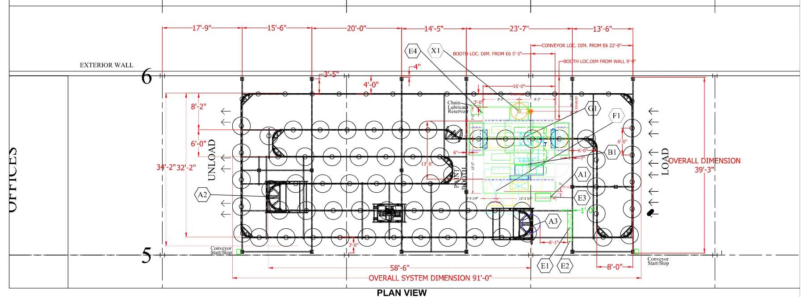
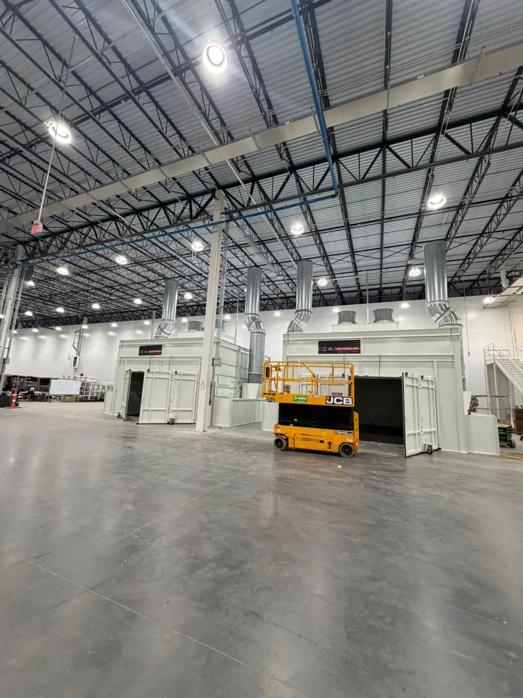
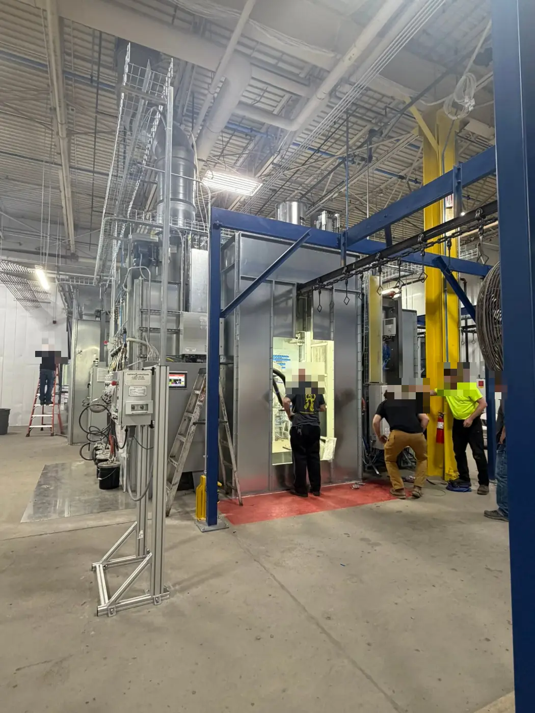
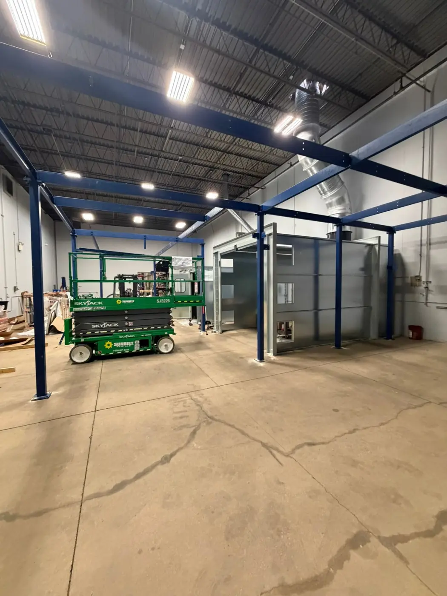
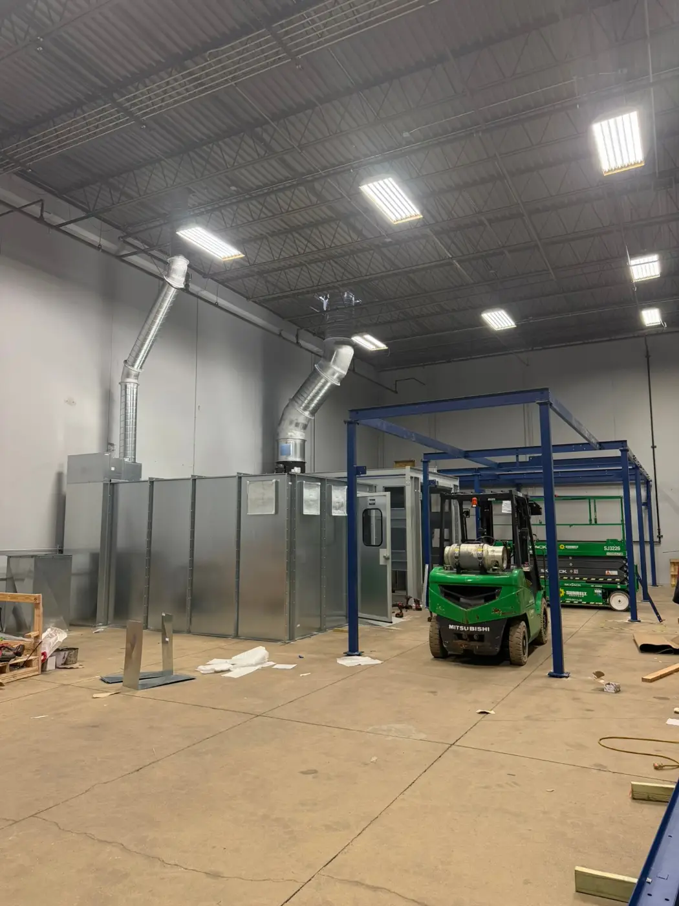
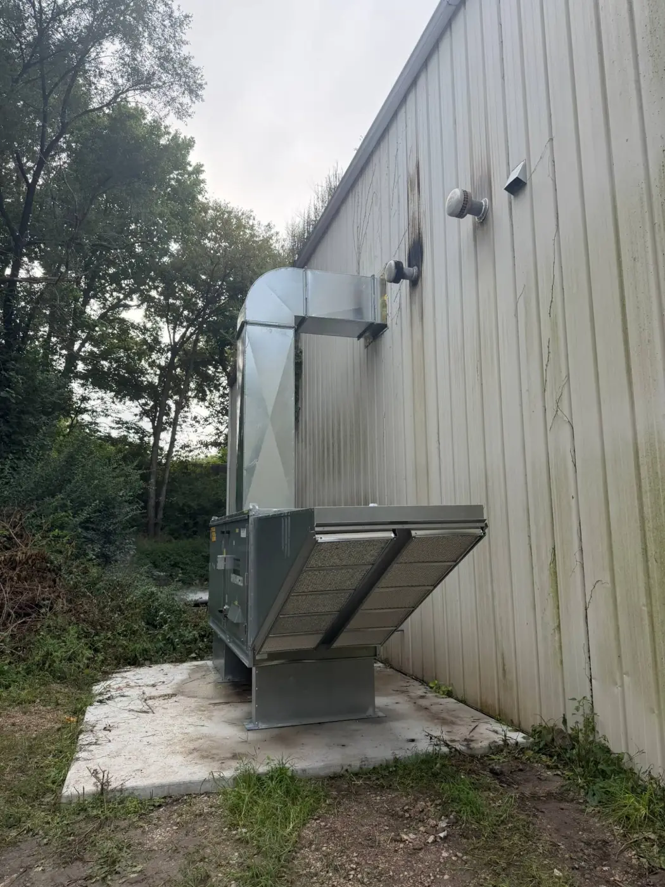
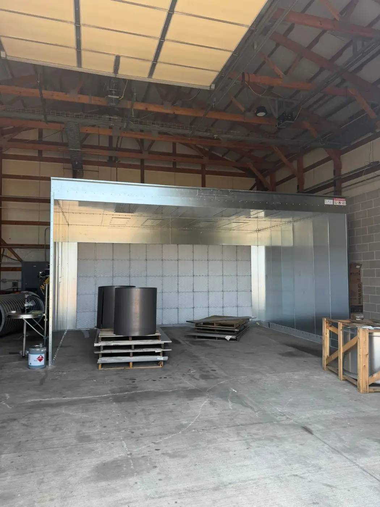
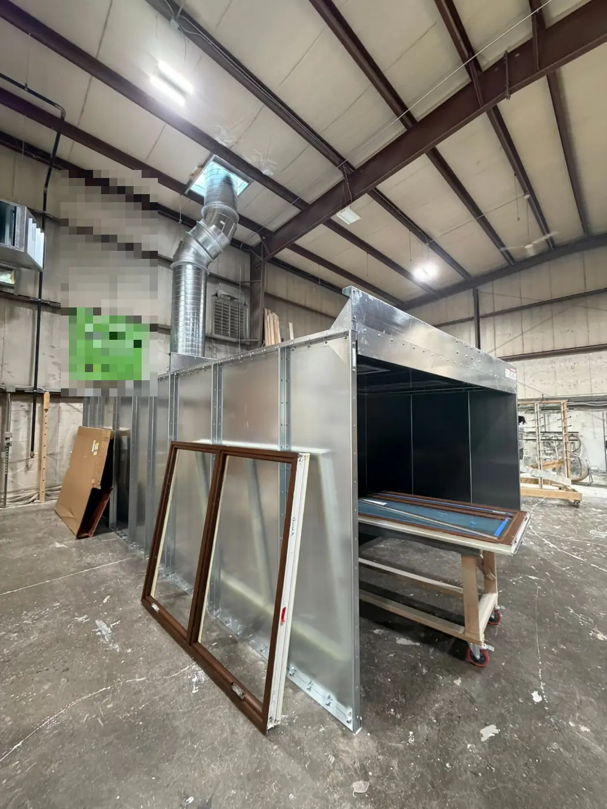

Industrial equipment projects, concept to start-up
Engineering lead on paint and powder finishing lines — booths, cure ovens, air make-up units, wash systems and conveyors — for EV, heavy-equipment and building-products plants.


Problem
Every plant needs a finishing system sized to its parts, throughput, building and utilities — and every quote and drawing has to close scope gaps before anything is fabricated.
What I did
Process selection, airflow and thermal sizing, layouts and equipment specs; coordinating vendors such as GFS, Rohner, Nordson and Clemco; reviewing drawings and submittals; on-site installs and start-ups.
Result
54 opportunities led (USD 21M quoted); 10 of 23 decided projects won (USD 4.85M); managed ~6 on-site installations and start-ups, including a multi-booth paint line for an EV manufacturer.
01Drawings I produce
Ten excerpts from layout drawings I produced across five projects — paint lines, powder lines, blast systems, mix rooms and the utilities each plant has to provide. Pick a drawing; click it to open full size. Customer names, title blocks and equipment identifiers are removed.
Loading the interactive demo…
02On site: installation & start-up
Drawings end on a concrete floor. I have managed about six on-site installations and start-ups: coordinating the installers and the on-site schedule, tracking progress, running the punch list and bringing burners and lines up at start-up. Below are some of those sites — booths, conveyor structures and air make-up units. Customer signage and people’s faces are blurred.






03My role
Engineering lead from concept to start-up. I turn a customer’s parts, finish and volume into a process, size the equipment, draw the layout, write the specs, coordinate the OEM vendors, and manage installation and start-up on site.
I manage ~20–25 concurrent opportunities at a time.
04How a project runs
Loading the interactive demo…
05What I check before release
Most expensive mistakes are scope gaps between documents. Before a layout goes out I check, among other things:
- Hook load on the drawing vs. what the conveyor was quoted for.
- Ceiling and truss heights against stacks, ducts and the air make-up unit.
- Electrical scope — what we supply and what is “by others”.
- A utilities chart with every connection the plant must provide: exhaust and fresh-air CFM, electrical, compressed and breathing air, gas.
Those checks are also what I automated in ProjectTracker’s 44-criteria drawing review.
06The line in 3D
A 3D model built from the dimensions on my layout drawings. Drag to orbit, pick a component, change the line speed.
Loading the interactive demo…
07Throughput & cure, in numbers
A generic line to play with: line speed and part spacing set throughput; conveyor length in the oven sets dwell time, which has to meet the coating’s cure schedule.
Loading the interactive demo…
08The sizing math, open-sourced
I packaged the public physics and code-cited formulas behind a first-pass line sizing (booth airflow, make-up air and burner load, oven dwell and heat balance, conveyor speed and load, building clearances) as a Python library, a CLI and an MCP server, so an AI agent can size a line by calling tested functions instead of guessing numbers. Every result states its basis (code, physics or user input), and the package ships no design defaults: velocities, margins and geometry are always inputs.
09Results
10Confidentiality
Customers are described generically. Drawings are partial excerpts with identifiers removed; the 3D model and simulator are illustrative, not a customer’s line.